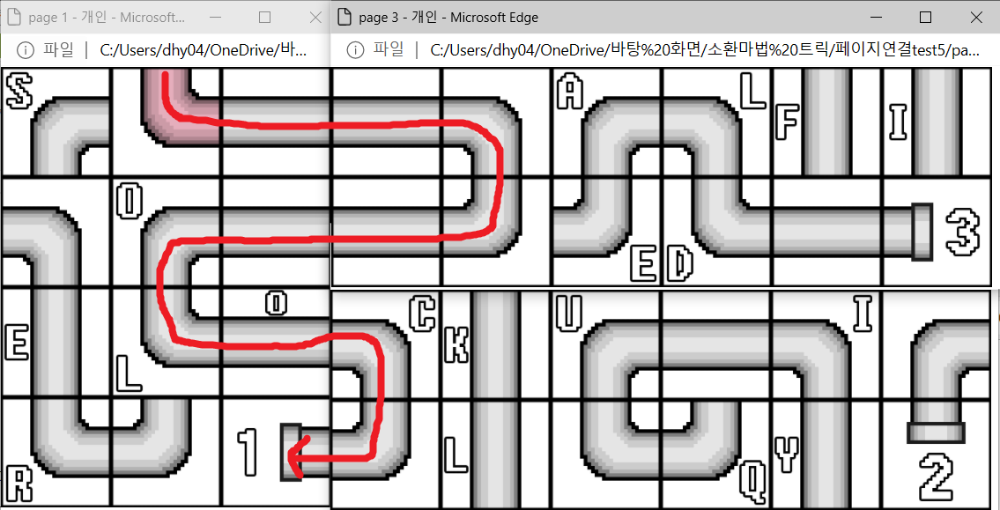

안녕하세요 테스터님. 테스트에 앞서 간단한 확인 과정을 거쳐주세요. 1.브라우저의 줌(확대/축소)가 100%로 되어있는지 확인해주세요. 2.추가기능이 필요하다는 알림이 뜨면 냥부엉에게 알려주세요. (확인도 눌러주세요..ㅠㅠ이상한거 아님!) 3.창 크기 조절이 되지 않는다면 냥부엉에게 알려주세요. 4.시간이 오래 지나면 창 렉이 걸릴 수 있어요. 새로고침으로 렉을 풀어주세요!ㅠㅠ 5.뭔가 시키는대로 한 것 같은데 변화가 없다면 냥부엉에게 알려주세요. >>>준비되셨다면 위 세개의 버튼을 눌러 창을 열어주세요!!!<<< [How to Play] 시작부분에서부터 쭉 관을 연결해 포션을 만들어주세요! 세 창은 합쳐서 직사각형을 이루어야 합니다. (데모라서 불안정해요 최대한 창을 딱맞게 조그맣게 만들어주세요 ㅠㅠ) 다음은 관이 연결된 예시입니다! 